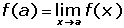
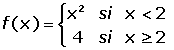
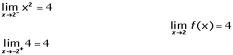
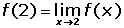

Continuidad de una función
Una idea intuitiva de función continua se tiene al considerar que su gráfica es continua, en el sentido que se puede dibujar sin levantar el lápiz de la hoja de papel.

Continuidad de una función en un punto
Se dice que una función f(x) es continua en un punto x = a si y sólo si se cumplen las tres condiciones siguientes:
1. Que el punto x = a tenga imagen.

2. Que exista el límite de la función en el punto x = a.

3. Que la imagen del punto coincida con el límite de la función en el punto.

Ejemplo
Estudiar la continuidad de  en x = 2
1. La función tiene imagen en x = 2.
f(2)= 4
2. La función tiene límite en x = 2 porque coinciden los límites laterales.

3. En x = 2 la imagen coincide con el límite

En la gráfica podemos comprobar que es continua.